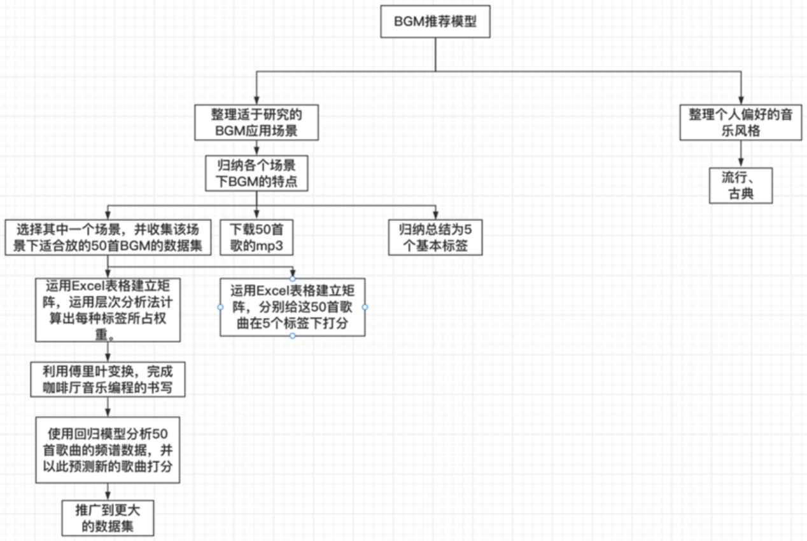
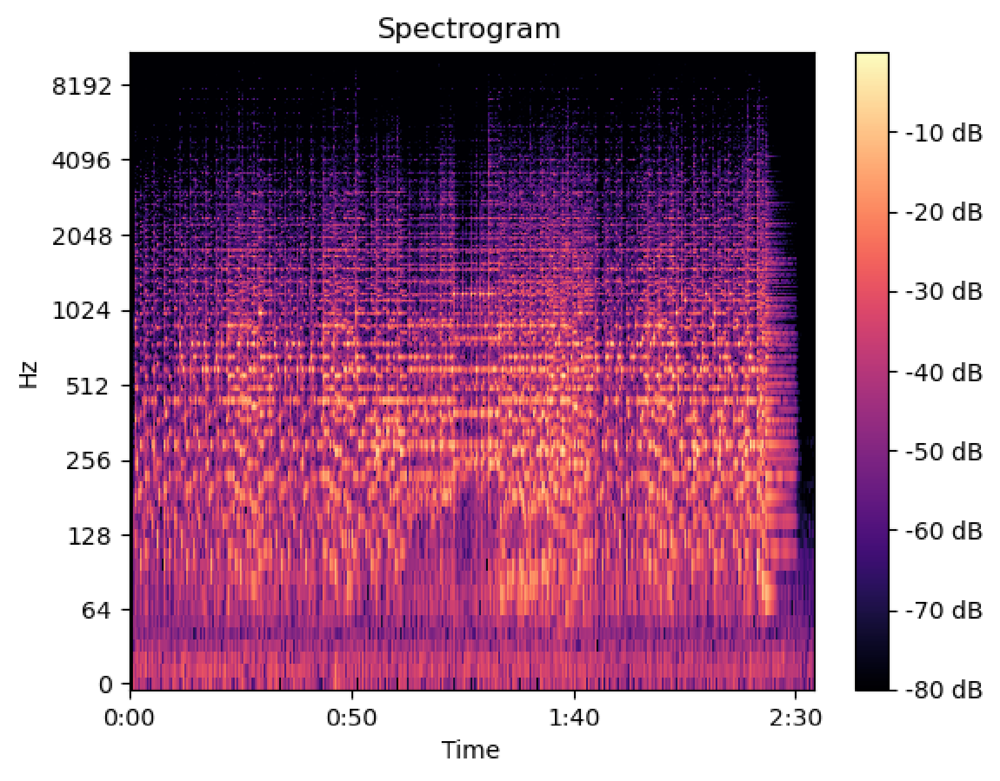

上海市曹杨第二中学
Shanghai Cao Yang No.2 High School
研究性学习论文 · Research Learning Thesis
基于实际场景需求的个性化背景音乐歌单推荐模型的研究
完成日期： 2024 年 7 月 26 日
基于实际场景需求的个性化背景音乐歌单推荐模型的研究
摘要
在本研究中，我们针对现有音乐推荐系统在不同场景需求下表现不足的问题，提出了一种基于实际场景需求的个性化背景音乐推荐模型。现有的音乐推荐系统大多依赖用户的历史听歌记录和偏好，无法满足用户在不同场景（如咖啡厅、婚礼、博物馆等）下的情感需求。为了解决这一问题，我们的研究目标是通过结合场景的情感需求和用户的个性化偏好，构建一个智能化的背景音乐推荐系统。
为达成这一目标，我们首先对多个实际场景的情感需求进行了分析和标签化处理，并通过层次分析法（AHP）对不同场景下的情感标签进行加权。接下来，我们使用傅里叶分析对音乐的频谱特征进行提取，将复杂的音频信号转换为可量化的频域特征，以便与场景需求进行匹配。在此基础上，我们采用随机森林回归模型，根据提取的音乐特征和场景的情感权重生成个性化的背景音乐推荐。
通过实际测试与验证，该模型能够在不同场景下生成符合需求的背景音乐推荐歌单，且推荐结果与场景的情感氛围高度契合。实验结果表明，该模型不仅能够满足用户在特定场景下的音乐需求，还可以通过个性化推荐提升用户的体验。
本研究的实际价值体现在其广泛的应用潜力上，该模型不仅适用于咖啡厅、婚礼等常见场景，还可以推广至教育、医疗、展览等多个领域。通过智能化推荐技术，该模型为背景音乐的个性化推荐提供了一种创新且实用的解决方案。
关键词：背景音乐推荐、层次分析法、傅里叶分析、随机森林回归、 Python
第一章 引言
1.1 研究背景
随着信息技术的飞速发展和音乐艺术的日益普及，音乐已经成为人们日常生活中不可或缺的一部分。无论是在个人娱乐、社交活动，还是商业场景中，音乐都扮演着重要的角色。特别是在现代社会，音乐不仅仅是听觉上的享受，更是情感表达、氛围营造以及文化传播的重要媒介。在这种背景下，背景音乐（Background Music，简称 BGM）逐渐成为了各类场景中不可或缺的元素，无论是在咖啡厅、商场、婚礼、展览还是其他公共场合，背景音乐都能通过调动情绪、提升氛围，甚至影响人们的行为和决策。
背景音乐的应用最早可以追溯到早期的广播电台和电影场景中，随着技术的进步，背景音乐逐渐在各类商业和娱乐活动中广泛应用。比如，早期的经典电影《卡萨布兰卡》（Casablanca）通过其独特的背景音乐成功地增强了电影的情感表达，使得观众在观看电影时能够更为深入地感受剧情中的爱与离别。同样，在商业领域，背景音乐不仅被应用于广告和营销活动中，还被证明能够显著影响消费者的购物行为。在商场中播放舒缓、愉悦的音乐，可以让顾客放松心情、延长购物时间、增加购买欲望，而快节奏、动感的音乐则往往用于促销活动，以激发顾客的购买冲动。
此外，背景音乐在现代社交活动中也发挥着越来越重要的作用。近年来，随着社交媒体的兴起，短视频平台如抖音、快手等迅速崛起，音乐成为了这些平台的核心要素之一。无论是背景音乐对视频内容的烘托，还是音乐本身的病毒式传播，都在潜移默化中深刻影响着人们的社交和文化生活。一个合适的背景音乐不仅能够提升视频的表达效果，甚至可以成为一种文化符号，使得音乐与场景、情感、氛围紧密结合。
然而，尽管背景音乐的作用日益重要，现实生活中人们在选择背景音乐时仍然面临着诸多难题。现有的音乐播放软件虽然功能强大，但大多数软件的推荐算法主要依赖用户的听歌记录和偏好，而忽略了实际场景的需求。在实际应用中，很多用户在不同场合下需要的背景音乐与他们日常的听歌习惯有很大差异，譬如在婚礼现场需要浪漫、温馨的背景音乐，而在健身房则需要动感、激励的音乐。因此，用户经常苦于无法找到符合特定场景需求的背景音乐歌单，现有的音乐推荐系统如网易云音乐等软件虽然已经非常优秀，但在场景化需求上的表现仍然不足。
背景音乐的选择，不仅需要考虑个体的喜好，还需要考虑到不同场合的情感需求和氛围塑造。例如，在一个温馨的婚礼中，背景音乐需要传达的是浪漫和幸福的情感，而在一个高端的艺术展览中，背景音乐则需要传递的是优雅和深邃的氛围。音乐的风格、节奏、旋律、音色等元素在不同场景下所产生的情感共鸣各不相同。因此，背景音乐的选择不仅是一个技术问题，更是一个艺术与科学相结合的过程。
1.2 相关研究综述
随着近年来人工智能技术的飞速发展，国内外的研究者和企业开始关注如何通过智能技术，满足用户在特定场景中的音乐需求。在音乐推荐领域，尤其是在短视频平台的背景音乐推荐中，研究者们提出了许多新颖的解决方案。例如，抖音、Tiktok 等短视频平台的迅速崛起，不仅催生了一大批被称为“抖音神曲”
的经典背景音乐（BGM），也推动了基于视频内容的背景音乐推荐模型的发展。
这类应用不仅改变了人们的娱乐消费方式，还显著影响了背景音乐在数字化平台上的使用和传播。
1.2.1 视频背景音乐推荐研究
在视频背景音乐推荐方面，哈尔滨工业大学的高建男提出了一种基于多模态情感分析的视频背景音乐推荐模型。该模型通过提取视频的情感特征（如色彩、光线、动作等）以及音乐的节奏、频率、音色等特征，运用 Multiple-type Latent Semantic Analysis（M-LSA）建立了多模态情感分析模型。这一方法为视频制作中的背景音乐选择提供了智能化手段，帮助用户在推荐范围内有向选择符合视频氛围的音乐。然而，该模型主要依赖于视频内容的情感分析，虽然能够提供多元化和专一化的推荐，但由于缺乏对用户个人偏好的考虑，难以满足所有用户的需求，且其应用范围局限于视频制作，未能在现实生活中得到广泛应用。
类似的研究还包括中国传媒大学的顾鑫提出的低异构性双路径检索网络 （DPCE）。该模型通过双路径融合视频内容信息与情感信息，消除异构信息，提升了音乐与视频情感的匹配度。尽管该模型在短视频音乐检索任务中取得了一定的突破，但未充分考虑到用户基于个人喜好的选择，尤其是在现实生活中的背景音乐应用场景中，该模型的局限性较为明显。
此外，晁建嵩提出的基于跨媒体语义匹配的相册背景音乐推荐方法，试图解决相册与背景音乐的情境匹配问题。该模型通过爬取图片与音乐的语义数据，将图片语义与音乐语义向量进行匹配，为用户推荐相关度最高的背景音乐。虽然这种方法在跨媒体推荐中具有创新性，但其应用范围较小，且忽略了用户主观偏好与个性化需求，未能广泛应用于更为复杂的现实场景中。
1.2.2 商业场景中的背景音乐推荐
与学术研究相比，商业场景中的背景音乐推荐也逐渐受到企业的关注。以全球知名的连锁咖啡品牌星巴克（Starbucks）为例，星巴克通过与音乐平台 Spotify合作，为其店内消费者提供量身定制的背景音乐。这种基于场景化需求的音乐推荐不仅增强了顾客的消费体验，还提升了品牌的文化价值。
例如，在星巴克的门店内，播放的音乐通常是经过精心挑选的，目的是营造一种放松、舒适的氛围，从而延长顾客的停留时间，促进消费。这一策略在提升顾客满意度的同时，也为品牌文化的塑造增添了独特的音乐元素。
尽管这些商业应用取得了一定的成功，但大多数背景音乐的选择仍然依赖于人工设计和选择，缺乏智能化和个性化的推荐手段。背景音乐的选择多基于品牌方的整体策略和长期的经验积累，对于新开咖啡馆或校园中的特定场景，由于没有历史经验借鉴下并无良好的歌单确定方式。因此，如何在不同场景中实现背景音乐的个性化推荐，仍然是一个重要的研究课题。
1.2.3 背景音乐推荐研究的现存问题
尽管现有的研究和应用在一定程度上解决了背景音乐推荐的问题，但从整体上来看，当前的背景音乐推荐系统仍然存在一些显著的不足。
首先，现有的音乐推荐算法大多基于用户的历史记录和听歌偏好，而忽视了用户在特定场景中的实际需求。例如，用户在日常生活中听的音乐风格与他在咖啡厅、婚礼、展览等场景中所需要的背景音乐往往存在较大差异，单纯依赖历史记录的推荐难以满足用户在特定时间段和特定场景下的实际需求。这可能是需要在某个时间点，通过计算机智能化技术实时生成。
其次，现有的推荐系统尚未充分考虑情境和情感的复杂性。在不同的场景中，背景音乐不仅需要与场景的情感氛围相匹配，还需要根据用户的个性化偏好进行调整。例如，在婚礼场合中，背景音乐需要传达浪漫、温馨的情感，而在健身房中，背景音乐则需要激励和动感。现有的推荐系统缺乏对这些复杂情感的深入理解，难以为用户提供精确的背景音乐推荐。
最后，大多数现有的背景音乐推荐模型缺乏对多元场景的适应性。现有的研究多集中于特定领域（如短视频、数字相册等），而未能在更广泛的现实生活场景中进行应用的推广。事实上，不同场景对背景音乐的需求各不相同，要求音乐推荐系统能够在多种场景下进行个性化调整，而这正是当前研究中的一个相对空白的点，也是本研究所针对的重点。
1.3 研究目标与创新点
针对前文中提到的背景音乐推荐研究中存在的问题，本研究提出了一种基于实际场景需求的个性化背景音乐推荐模型，希望能够针对现有研究中的空白进行初步探究，并解决用户在现实生活中寻找背景音乐的难题。本文的研究目标是通过结合情境需求和用户的个性化音乐偏好，构建智能推荐系统，使背景音乐的选择不仅能够满足场景需求，还能贴合用户的个性化喜好。
本研究的主要创新点如下:
- 首先，本研究将场景需求与用户偏好相结合，在考虑场景情感需求的同时，充分融入用户的个性化音乐喜好，实现背景音乐的精准推荐。为了更好地捕捉场景中的情感特征，本研究运用了层次分析法（AHP）对每个场景的主要音乐标签进行加权分析，并通过傅里叶分析将复杂的音乐的频谱特征转化为可量化的数据，从而在场景特征和音乐特征之间建立起有机的联系。
- 其次，本研究采用了随机森林回归模型，这是一种基于人工智能技术的高效算法，可通过对音乐频谱数据和标签的分析，基于研究中建立的评分数据库，针对不同的场景生成适合的背景音乐推荐歌单。该模型不仅能够在多个场景下应用，还能根据用户需求进行动态调整，具有较强的灵活性和推广性。
- 最后，本研究的应用前景广泛，除了咖啡厅、婚礼、博物馆等常见场景外，还可以进一步推广至其他如教育、旅游、医疗等领域，通过背景音乐的智能推荐提升用户体验，具有非常良好的实用价值。
第二章 模型总体思路
2.1 建模基本方法
在本研究中，为了解决背景音乐与实际场景需求不匹配的问题，提出了一种基于场景特征与用户偏好的个性化歌单生成模型。研究的主要流程如下图：

该研究的流程可以分为四个主要步骤：
- 场景特征分析与标签提取: 首先，针对不同应用场景（如咖啡厅、婚礼、博物馆等），通过文献调研与用户反馈，提炼出每个场景下的主要情感特征。每个场景都会提取出几组关键的音乐标签，这些标签代表了音乐在该场景中应传达的核心情感属性。例如，在咖啡厅场景中，常用的标签为“轻松”、“浪漫”、“抒情”等，而在婚礼场景可能会更侧重于“温馨”、“浪漫”、“庄重”等。
- 层次分析法（AHP）确定标签权重: 一旦确定了每个场景的主要音乐标签，使用层次分析法（AHP）为不同标签分配权重。通过构造判断矩阵，专家或用户对标签的重要性进行成对比较，从而确定各个标签的相对权重。这个步骤的目的是量化用户对音乐情感特征的偏好，以便在后续的模型中进行加权计算。
- 傅里叶分析提取音乐频谱特征: 在模型中，音频特征的提取是至关重要的一步。研究中借用了物理中常用的傅里叶变换（FFT）的方法，将每首背景音乐的时域信号转换为频域信号，提取其频谱特征。傅里叶分析可以捕捉音乐的节奏、音高、频率等信息，其最主要的作用是将抽象的音乐信号转化为数字信号，降低其数据维度，从而为后续的数据回归模型打下基础。
- 随机森林回归模型: 在获取每首音乐的频谱特征后，利用随机森林回归模型（Random Forest Regressor）对音乐进行标签评分。在研究中模型可根据标签的权重和音乐的频谱特征，预测每首音乐在不同场景下的得分情况。通过综合这些得分，基于其得分的排名，最终为每个场景生成适合的背景音乐推荐歌单。
2.2 模型数据来源和基本假设
2.2.1 数据来源
本文选取了 500 首流行音乐和古典音乐作为基础数据库，咖啡厅，酒吧，博物馆与艺术展览，商场促销，婚礼宴会，旅游宣传，教育场合这七个主要适合研究应用 BGM 的场景，并归纳总结出了适用于各个场景下 BGM 的特点。在个人偏好的确定时，针对于不同场景下的个性化需求，主要通过分析其音乐风格来确定，用于建立数据集的歌曲数据库定为 500 首，来源为网易云音乐平台，主要包括流行乐、古典乐等不同风格的歌曲类型，并根据其在网络流行度的排名来确定是否筛选。
由于选取场景较多，研究中选择先针对一个场景进行数据收集与建模，若成果符合预期以验证此方法的可行性，再将其推广到其他场景上。
2.2.2 基本假设
假设 1：音乐的情感特征与特定场景需求之间存在强关联
该研究假设不同场景（如咖啡厅、酒吧、博物馆等）对背景音乐有特定的情感需求，音乐的情感特征（如轻松、浪漫、动感等）可以通过傅里叶分析的方法建立节奏、音高、频率等信息的数学模型，并与场景需求相匹配。
假设 2：特定场景需要特定的背景音乐风格
每个现实生活中的场景（如咖啡厅、婚礼、博物馆等）都有特定的音乐风格需求，而这些需求可以通过音乐的情感特征来描述和满足。不同场景下，用户对音乐标签的偏好权重不同。例如，在咖啡厅这个场景下，“轻松”可能比“动感”更重要，而在酒吧，“动感”可能占据更大的比重。这个假设构成了本研究中数学模型的重要基础。
第三章 模型求解过程
3.1 模型 I: 基于层次分析法的 BGM 场景适应度评价模型
3.1.1 层次分析法的基本原理
层次分析法，简称 AHP，是指将与决策总是有关的元素分解成目标、准则、方案等层次，在此基础之上进行定性和定量分析的决策方法。层次分析法包括以下步骤：
- 明确问题：目标是什么，方案有哪些，根据什么原则进行判断。在本研究中，我们通过设置特定标签的形式确立评价准则。
- 建立层次结构
- 构造判断矩阵
- 层次单排序及其一致性检验
- 层次总排序及其一致性检验
3.1.2 数据收集和处理
根据实际场景中的需要，我初步确定了咖啡厅、酒吧、博物馆与艺术展览、商场促销、婚礼宴会、旅游宣传、教育场合这七个可能会使用 BGM 的场景。由于选取场景较多，研究内容相对复杂，研究过程中我选择先针对一个场景进行数据收集与建模，若成果符合预期以验证此方法的可行性，再将其推广到其他场景上。在具体场景的选择上，我选取了音乐风格较广泛，常见，且与其余场景下使用的歌曲风格有所重叠与相似的咖啡厅作为我的第一个研究对象。这样既可以方便我的初步研究，又可以简化我后期对于其他场景收集数据的工作量。
标签确定：基于适合在咖啡厅中放的 BGM 所具有的特点，我初步确定了 13 个标签。然而，这其中大多有相似之处，且数量众多极大复杂化了研究过程。因此我根据各标签所占权重删去权重较小者，并将类似风格进行整合概括，经筛选后确定为五个最重要的标签，即“轻松、浪漫、动感、温暖、抒情”
数据收集：确定标签后，我开始运用网站搜索的方式寻找合适的音乐。我选择将音乐数量定在 50 首。在音乐类型的选取上，我会采纳网站上给出的建议与自己的经验，注重风格多样而应景，选取古典、流行与轻音乐这三种体裁的音乐，既有引起人们共鸣的经典，又有顺应潮流的新曲，使歌曲的受众面尽量做到最大，满足更多用户的听歌需求。确定曲目后，我通过网易云音乐 app 将每首音乐以 mp3 的形式存储下来，以供后续研究。
3.1.3 判断矩阵的构造和求解
判断矩阵的建立是基于 Santy 1-9 标度法，对各标签两两对比，构造的正反对称矩阵，具体方法如下：
表 3.1: Santy 1-9 标度法表格
| 标度 | 含义 |
|---|---|
| 1 | 表示两个元素相比，具有同样的重要性 |
| 3 | 表示两个元素相比，前者比后者稍重要 |
| 5 | 表示两个元素相比，前者比后者明显重要 |
| 7 | 表示两个元素相比，前者比后者强烈重要 |
| 9 | 表示两个元素相比，前者比后者极端重要 |
| 2, 4, 6, 8 | 分别表示上述相邻判断的中间值 |
| （注：反向比较时，标度值取倒数，例如 1/3 表示 B 比 A 稍重要） | |
根据这个矩阵，可根据将矩阵根据层次分析法的基本步骤，代入下面对应的 Python 程序，求解其最大特征值和特征向量，从而得到对应各标签的权重。
A =[[1,3,6,2,2],[1/3,1,2,2/3,2/3],[1/6,1/2,1,1/3,1/3],[1/2,3/2,3,1,1],[1/2,3/2,3,1,1]]
import numpy as np
lamb,v=np.linalg.eig(A)
lambda__max=max(abs(lamb))
loc=np.where(lamb==lambda__max) weight=abs(v[0:len(A),loc [0][0]])
weight=weight/sum (weight) print(weight)可得各个标签在该场景下对应的权重为：
[0.4, 0.13333333, 0.06666667, 0.2, 0.2]这样我们可以通过打分结合权重的方式，来确定各歌曲在具体场景下的实际评分。
3.2 层次分析法评价模型基于机器学习的推广
随机森林回归模型是一种基于决策树的集成学习模型，它通过组合多个决策树来提高预测的准确性和稳定性。随机森林回归模型的基本原理包括以下几个要点：
- 集成学习：随机森林属于集成学习的一种，通过构建多棵决策树，最终预测结果是由这些树的结果综合而来。这种方法可以减少单一模型可能出现的过拟合问题，因为每棵树都是在数据的一个子集上训练的，而且每棵树的构建过程中随机选择一部分特征。
- 自助聚集：在构建每棵树时，采用自助聚集的方法，即有放回的抽样技术从原始数据集中抽取样本，这样每棵树都是在不同的样本子集上训练的。这种方法有助于减少模型对特定训练数据的依赖，从而提高模型的泛化能力。
- 特征选择：在每个节点分裂时，不是使用所有的特征，而是随机选择一部分特征进行考虑，这样可以减少特征间的共线性影响，同时也增加了模型的随机性。
- 预测：对于新的输入数据，每棵树都会进行预测，最终预测结果是所有树预测结果的平均值。这种方法可以综合各树的预测结果，通常能得到更稳健和可靠的预测。
为了完成这个目标，首先我们需要通过调研自制音频数据在场景适用性下的打分数据集，然后还需要通过提取每一首歌曲的具体特征，来使用随机森林机器学习的方法，完成自动化打分。
3.2.1 基于傅里叶分析方法的音频数据化处理
傅里叶分析是数学中的一个重要分支，它主要研究将信号或函数从时间域或空间域转换到频率域的方法，其核心思想是通过将一个复杂的信号分解为多个简单的正弦波的叠加，从而实现对信号频率特性的分析。这种分析不仅可以帮助我们理解信号的频率成分，还可以用于信号的滤波、压缩、识别等处理。在编程实现傅里叶分析时，通常会使用快速傅里叶变换（FFT）算法，这是一种高效的算法，能够在较短的时间内完成傅里叶变换的计算。例如，在音频处理中，傅里叶分析可以用来分析音乐的音调、节奏等特征，将复杂的信号分解为简单的频率成分，从而实现对音乐的深入理解和处理。
借助数据集，我利用傅立叶分析编程，分析每首音乐的频谱数据，下面是编程代码：
import librosa
import numpy as np
import matplotlib.pyplot as plt
# 加载音频文件
y, sr = librosa . load( ’ 1.mp3’)
import librosa . display
# 计算STFT
D = librosa. stft (y)
# 转换为分贝单位
D__db = librosa.amplitude__to__db(np.abs(D), ref=np.max)
# 绘制频谱图
librosa . display . specshow(D__db, sr=sr, x__axis=’time ’, y__axis=’log’) plt . colorbar(format=’%+2.0f dB’)
plt . title ( ’Spectrogram’) plt . show()可得到如下频谱图，该图片（图3.1）展示了将音频数据降维并可视化后的数据图像。

图 3.1: 音频文件的傅里叶频谱图
3.2.2 结论
研究使用随机森林回归模型对收集到的音乐频谱数据进行分析，并结合之前所得标签的权重，得到该音乐数据集在咖啡厅这一场景下的最终得分：
import os
# 获取所有音乐文件的路径
music__dir = ’./ ’ # 音乐文件目录
file__paths = [os.path.join(music__dir, file ) for file in os . listdir (music__dir) if file .endswith( ’.mp3’)]
# 定义一个列表来保存所有的频谱
spectrograms = []
# 定义重采样的样本率和音频长度
resample sr = 22050
duration = 60 # 以秒为单位
# 定义STFT的参数
n fft = 2048
hop length = 512
# 循环处理每一个音乐文件
for file path in file paths :
# 加载音频文件， 限定长度并重采样
y, sr = librosa . load(file__path, sr=resample__sr, duration=duration) y = librosa .resample(y, orig__sr=sr, target__sr=resample__sr)
# 计算STFT
D = librosa. stft (y, n__fft=n__fft, hop__length=hop__length)
# 转换为分贝单位并转换为2D numpy数组
D__db = librosa.amplitude__to__db(np.abs(D), ref=np.max)
# 将频谱添加到列表
spectrograms.append(D__db)
# 将所有的频谱转换为一个3D numpy数组，形状为(n__songs, n__freqs, n__times)
spectrograms = np.array(spectrograms)
import pandas as pd
from sklearn.model selection import train test split from sklearn.ensemble import RandomForestRegressor
# 读取评分数据
df = pd.read__excel( ’../咖啡厅音乐标签打分.xlsx’) # 评分文件
scores = df[[ ’轻松’ , ’浪漫’ , ’ 动感’ , ’ 温暖’ , ’抒情’ ]]. values # 评分列名
# 将频谱数据转换为2D的形式
n songs, n freqs, n times = spectrograms.shape
X = spectrograms.reshape(n__songs, n__freqs * n__times)
# 将数据分为训练集和测试集
X__train, X__test, y__train, y__test = train__test__split(X, scores, test__size=0.2, random__state=42)
# 对每个标签训练一个回归模型
models = []
for i in range(5):
model = RandomForestRegressor() model. fit (X__train, y__train[:, i ]) models.append(model)
# 获取新的音频文件的路径
new__music__dir = ’./ ’ # 替换为音乐文件目录
new__file__paths = [os.path.join(new__music__dir, file) for file in os . listdir (new__music__dir) if file .endswith( ’.mp3’)]
# 定义一个列表来保存所有的频谱
new__spectrograms = []
# 循环处理每一个音乐文件
for file path in new file paths:
# 加载音频文件， 限定长度并重采样
y, sr = librosa . load(file__path, sr=resample__sr, duration=duration) y = librosa .resample(y, orig__sr=sr, target__sr=resample__sr)
# 计算STFT
D = librosa. stft (y, n__fft=n__fft, hop__length=hop__length)
# 转换为分贝单位并转换为2D numpy数组
D__db = librosa.amplitude__to__db(np.abs(D), ref=np.max)
# 将频谱添加到列表
new__spectrograms.append(D__db)
# 将所有的频谱转换为一个3D numpy数组，形状为(n__new__songs, n__freqs, n__times)
new__spectrograms = np.array(new__spectrograms)
# 将频谱数据转换为2D的形式
n new songs, , = new spectrograms.shape
new__X = new__spectrograms.reshape(n__new__songs, n__freqs * n__times)
# 代入权重
weights = [0.38834951,0.0776699,0.38834951,0.04854369,0.09708738]
# 为每个新的音频数据预测5个标签的评分
new__scores = np.zeros((n__new__songs, 5)) for i in range(5):
new__scores[:, i ] = models[i]. predict(new__X)
# 计算总评分
total scores = new scores @ weights这五十首音乐的最终得分为： [4.01266666 4.11866666 3.75199999 3.59666666 4.02066666 4.05733333 4.12466666 3.62799999 3.55266666 4.48333332 4.43733332 4.36466665 4.46799999 3.96066666 3.77733333 3.62866666 4.24266666 4.07799999 4.13399999 3.99666666 4.32266666 4.22066666 4.22733333 3.95933332 3.77133333 3.97999999 4.00133333 3.71133333 3.76133333 4.38866666 3.93799999 3.06466666 4.13399999 3.38 3.94066666 4.10199999 3.53199999 3.61066666 3.50933332 3.95199999 4.04466666 3.78266666 4.41466666 4.20199999 4.10066666 4.12933332 4.40399999 3.52866666 3.98533333 3.89133333] 得分越高者越适合该场景，反之亦然。同时分析该结果的正确性与可行性，并将此种分析方法推广到其余场景与更大的数据集中。
根据得分情况，在咖啡厅最适宜的十首背景音乐为：春野、神秘园之歌、日光海岸、菊次郎的夏天、 kiss the rain、梁祝、雪的梦幻、城里的月光、卡农、简单爱。
这样我们可以得到单个场景下，最适合在咖啡厅播放的十首背景音乐的推荐，并且具有高度定制化、自动优化和可推广的特征。
第四章 讨论
4.1 模型的应用场景
该模型可推广到多种不同的场景，按照和咖啡厅推荐歌单同样的方法，可以分别计算婚礼宴会、博物馆与展览馆等场所的推荐歌单，列举计算结果如下
4.1.1 婚礼宴会推荐歌单计算结果
通过层次分析法确定的婚礼宴会标签权重：
[0.15151515 0.60606061 0.01515152 0.15151515 0.07575758]基于随机森林回归和傅里叶分析得到的最终婚礼宴会歌曲得分为：
[4.09136367 3.884697 4.27621216 3.89969701 4.53803034 4.12121216 4.5086364 3.92090913 3.87212125 4.7186364 4.60984852 4.61848488 4.69378791 4.10787882 4.31606065 3.96893943 4.5806061 4.37409094 4.48833337 4.29151519 4.34484851 4.1356061 3.86257579 4.51181822 4.03015155 4.27924246 4.22424246 4.25227277 3.61681821 4.6486364 4.23727276 3.66833337 4.39878792 3.78015155 4.36772731 4.16363639 4.20893943 4.19348489 3.839697 4.27242428 4.36590913 4.37272731 4.29106064 4.54772731 4.15818185 4.36409094 4.64696973 4.23227277 4.19848489 4.42378793]按照本文中的研究方法，可得在婚礼宴会最适宜的十首背景音乐为：春野、神秘园之歌、kiss the rain、梁祝、雪的梦幻、日光海岸、卡农、天空之城、 hotel california、i love you。
4.1.2 博物馆与艺术展览推荐歌单计算结果
通过层次分析法确定的博物馆与艺术展览标签权重为：
[0.24793388 0.49586777 0.04958678 0.08264463 0.12396694]基于随机森林回归和傅里叶分析得到的最终博物馆与艺术展览歌曲得分为：
[4.04818181 3.92471073 4.17049586 3.87338842 4.34305785 4.09752065 4.4076033 3.86057851 3.81826446 4.60190082 4.51611569 4.50801652 4.58090908 4.08280991 4.20586777 3.85 4.43900826 4.29165288 4.37628099 4.21314049 4.28603305 4.18512396 3.93867768 4.27462809 3.92512396 4.2283471 4.21198346 4.19338843 3.66826445 4.5405785 4.14388429 3.60669422 4.34727272 3.74743801 4.29644627 4.12396693 4.093719 4.06132231 3.88942147 4.20851239 4.35041322 4.20743801 4.30958677 4.49876032 4.11107437 4.30396693 4.54008263 4.0692562 4.16239669 4.34355372]按照本文中的研究方法，可得在博物馆与艺术展览最适宜的十首背景音乐为：春野、神秘园之歌、kiss the rain、梁祝、日光海岸、雪的梦幻、天空之城、卡农、i love you、蓝色多瑙河。
第五章 总结与展望
5.1 总结
在本研究中，我们提出了一种基于实际场景需求的个性化背景音乐推荐模型。该模型旨在通过结合用户个性化的音乐偏好与特定场景的情感需求，解决现有音乐推荐系统在场景化需求上的不足。研究的核心工作包括以下几个方面：
首先，我们通过文献调研和用户反馈，提取了多个实际场景（如咖啡厅、婚礼、博物馆等）的主要情感需求，并对这些情感需求进行了标签化处理。接下来，采用了层次分析法（AHP）对这些标签进行加权分析，从而为不同场景的情感标签赋予了相应的权重。这一过程确保了模型能够准确捕捉到各个场景的情感特征，并对音乐进行合理的推荐。
其次，在音乐数据处理方面，我们使用了傅里叶分析对音乐的频谱特征进行数据化处理，将复杂的音频信号转化为可量化的频域特征。这使得音乐的节奏、频率、音高等特征可以被精确提取并与场景的情感需求进行匹配。
在此基础上，我们引入了随机森林回归模型，通过对音乐频谱特征和场景标签的结合，进行背景音乐的推荐。随机森林模型的优势在于其通过集成多棵决策树，能够有效捕捉音乐与场景之间的复杂关系，并生成个性化的背景音乐推荐歌单。
实验结果表明，该模型能够在多个场景下（如咖啡厅、婚礼、博物馆等）生成符合场景需求的音乐推荐，且推荐的音乐与场景的情感氛围高度契合，证明了模型在实际生活中的广泛应用潜力。同时，模型的灵活性和扩展性使其具备在教育、医疗、旅游等领域进一步推广的可能性。
5.2 模型优缺点
5.2.1 模型优点
- 场景化与个性化结合: 本模型将场景需求与用户个性化偏好相结合，使得背景音乐推荐不仅满足了用户的情感需求，还能根据特定场景进行动态调整，提升了个性化推荐的准确性，使得模型在多样化的现实场景中具有显著的灵活性和适应性。
- 智能化推荐: 通过层次分析法 (AHP) 和随机森林回归模型的结合，模型能够对不同场景的音乐标签进行加权分析，并通过傅里叶分析提取音乐特征，自动生成适合的背景音乐推荐歌单，大大减少了人力成本，使推荐过程更加智能化和高效。
- 广泛的应用场景: 该模型不仅适用于咖啡厅、婚礼、博物馆等常见场景，还可以扩展到教育、医疗、旅游等多个领域，具备显著的通用性和推广潜力，为各类场景下的背景音乐推荐提供了有力的工具。
5.2.2 模型缺点
- 数据集的局限性: 当前模型使用的音乐数据较为有限，仅使用了 500 首流行音乐和古典音乐作为基础数据库，未能覆盖更多风格的音乐，导致在某些特定场景下的推荐结果可能不够充实。
- 场景特征提取的简化: 研究中对场景的情感需求提取较为简单，未来可以通过更复杂的情感分析和多维度场景特征提取，进一步提升模型的场景适应度。
- 计算复杂度: 随着数据集的扩大和场景样本的增加，模型的计算复杂度较高，尤其是在傅里叶分析和随机森林回归阶段，可能影响实时性和响应速度。
5.3 展望
本研究针对背景音乐推荐系统的场景化需求和个性化挑战，提出了一种有效的解决方案，但仍有很大的优化和推广空间：
- 模型的进一步优化: 在后续研究中，可以通过引入更加多样化的音乐数据集，扩大音乐风格的覆盖范围。同时，场景标签的提取和加权分配可以结合深度学习等技术，提升模型的准确性和自动化程度。
- 情感分析的深入: 本研究的场景情感需求提取较为简单，未来可以引入自然语言处理 (NLP) 和多模态情感分析技术，进一步细化情感标签，提升背景音乐与场景情感的匹配度。
- 实时性与个性化提升: 随着计算能力的提升，可以通过优化算法的复杂度和计算速度，进一步提升模型的实时性和响应速度，尤其是在大型数据集和复杂场景下的应用中。
- 跨领域推广: 除了咖啡厅、婚礼、博物馆等场景外，该模型未来还可以推广到更多垂直领域，如智能家居、医疗康复、教育培训等，通过背景音乐推荐提升用户体验，具有广泛的应用前景。
参考文献
[1] 高建男. 基于多模态情感分析的视频背景音乐推荐 APP 设计研究 [D]. 哈尔滨工业大学,2021.DOI:10.27061/d.cnki.ghgdu.2021.003450. [2] 顾鑫. 短视频背景音乐推荐技术研究 [D]. 中国传媒大学,2023.DOI:10.27483/d.cnki.gbjgc.2023.000106. [3] 晁建嵩. 基于跨媒体语义匹配的的相册背景音乐推荐 [D]. 上海交通大学,2013.